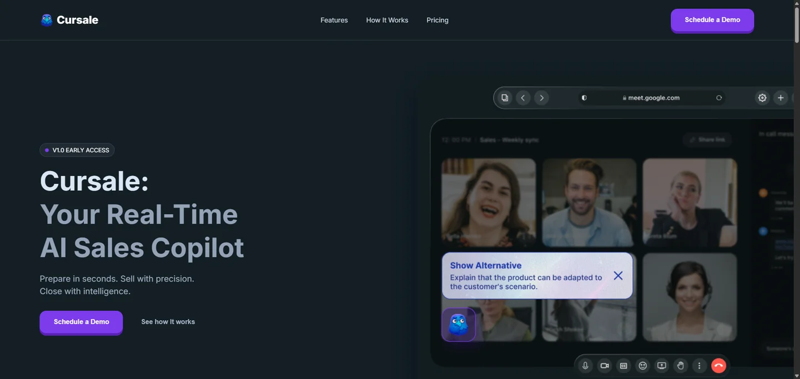
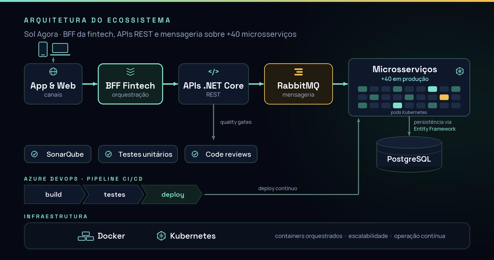

Back-end & APIs
C#, .NET Core, Node.js, Laravel, Entity Framework, RESTful APIs, WebSockets, JWT e Keycloak.
01Apresentação
Sou Engenheiro da Computação formado pela FHO e atuo como Desenvolvedor de Software com foco no ecossistema .NET. Minha base técnica foi construída a partir da engenharia, o que me proporcionou uma visão analítica e estruturada para a resolução de problemas complexos e a construção de aplicações escaláveis.
Meu aprofundamento prático em desenvolvimento ocorreu por meio de um programa intensivo, onde consolidei conhecimentos estruturais e de arquitetura com o acompanhamento de desenvolvedores seniores. Essa base me permitiu assumir rapidamente o desenvolvimento de sistemas críticos, atuando diretamente na criação e evolução de um ecossistema robusto composto por mais de 40 microsserviços em .NET Core.
Possuo uma visão sistêmica sobre o ciclo de vida das aplicações. Minha experiência abrange desde a modelagem de bancos de dados e construção de APIs, até a automação de pipelines de CI/CD e orquestração de contêineres com Docker e Kubernetes. Recentemente, fui o responsável técnico por arquitetar e implementar um agente de IA, estruturando a comunicação de baixa latência via WebSockets e a infraestrutura em nuvem na AWS.
No dia a dia, prezo pela qualidade e segurança do código, aplicando princípios de Clean Code, SOLID e testes automatizados. Trabalho bem em ambientes colaborativos e sob metodologias ágeis, buscando sempre entregar soluções que garantam estabilidade técnica e valor real ao negócio.
02Informações Técnicas
C#, .NET Core, Node.js, Laravel, Entity Framework, RESTful APIs, WebSockets, JWT e Keycloak.
AWS, Azure DevOps, Docker, Kubernetes, Nginx, CI/CD e deploy em ambientes distribuídos.
PostgreSQL, Redis, RabbitMQ, modelagem de dados, otimização de queries e persistência escalável.
Clean Code, SOLID, SonarQube, testes unitários e de integração, Scrum, Kanban e code reviews.
03Experiência
Cliente / projeto: Cursale

Arquitetura e implementação de um agente de IA em tempo real para apoiar vendedores durante chamadas. Desenvolvi comunicação via WebSockets, backend em Laravel, interface em Vue.js e infraestrutura com Docker, Nginx e AWS.

Cliente / projeto: Sol Agora
Evolução de sistema corporativo, BFF para fintech e APIs em um ecossistema com mais de 40 microsserviços. Trabalho com .NET Core, Azure DevOps, Docker, Kubernetes, RabbitMQ e SonarQube, com foco em escalabilidade e entrega contínua.

Cliente / projeto: Sol Agora
Formação prática em HTML, Git, C#/.NET e React, com construção de três projetos avaliados por desenvolvedores seniores. Depois da trilha inicial, atuei em projetos da empresa com suporte de uma equipe experiente.
04Projetos em destaque
Dois produtos que mostram meu recorte de atuação: arquitetura de back-end, integrações em tempo real e interfaces que conectam negócio, usuário e infraestrutura.
Ecossistema digital de energia solar sustentado por APIs, microsserviços .NET Core e operação contínua em produção com Docker, Kubernetes e Azure DevOps.
Meu papel: atuação no back-end — evolução de APIs, construção de BFF para fintech e sustentação de microsserviços críticos para a operação.
Agente de IA para assistência em tempo real durante chamadas comerciais, com interface em Nuxt/Vue.js e comunicação via WebSockets para entregar insights instantâneos ao operador.
Meu papel: responsável técnico pela arquitetura e implementação — interface em Nuxt, integração em tempo real e infraestrutura na AWS. Produto descontinuado por decisão de negócio; a vivência completa do ciclo de produto ficou.
05Formação
FHO - Fundação Hermínio Ometto
2019 - 2024Fortinet Certified Fundamentals in Cybersecurity
Cisco Networking Academy - Introduction to Cybersecurity
Inglês técnico
06Contato
Estou aberto a novas oportunidades, projetos e parcerias. Escolha o canal que preferir — respondo rapidamente e será um prazer conversar.